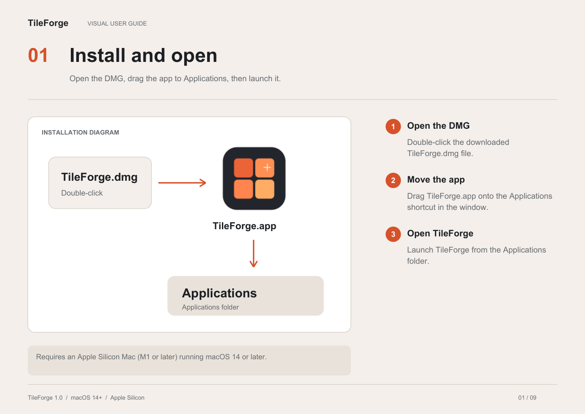
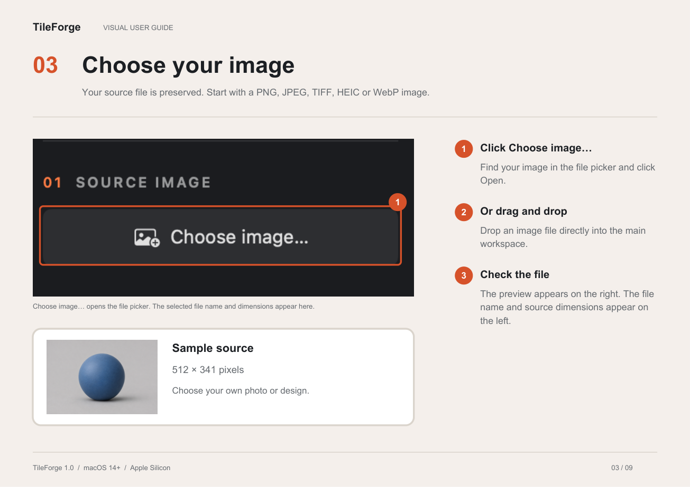
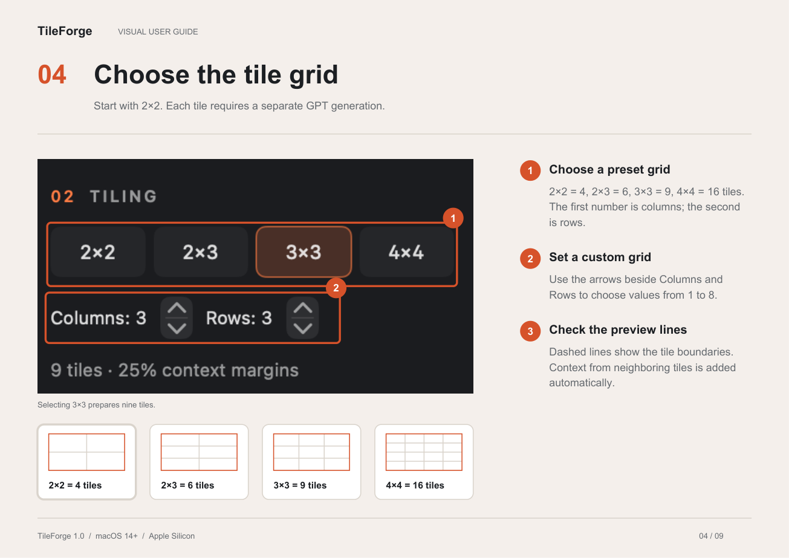
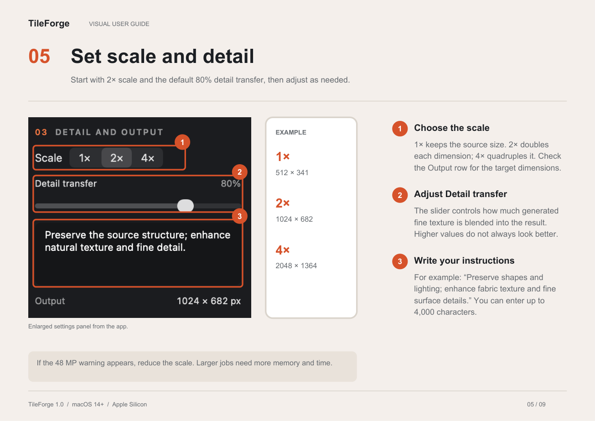
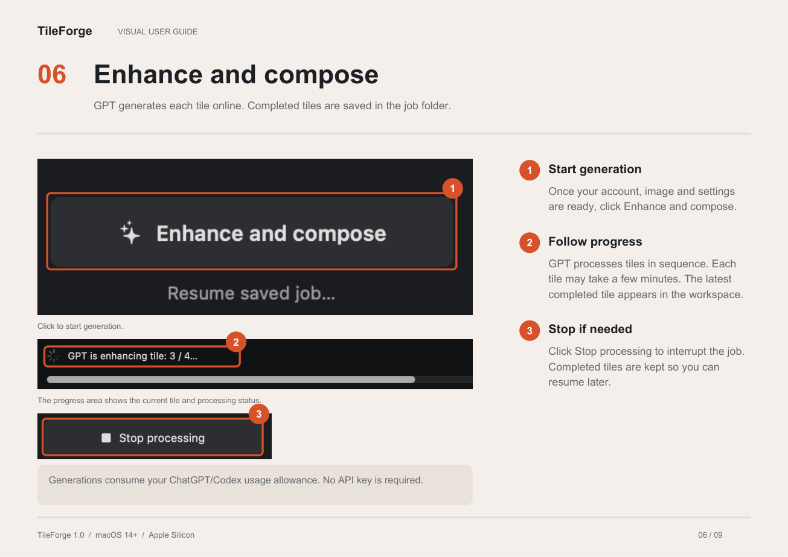
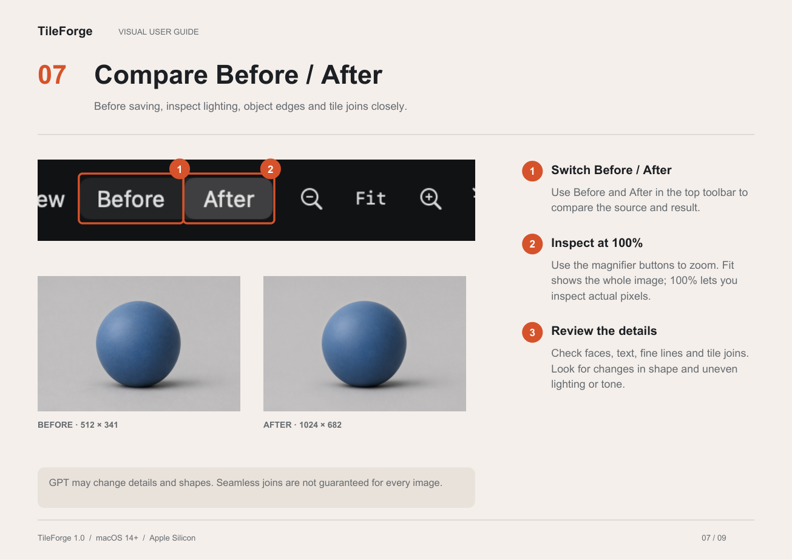
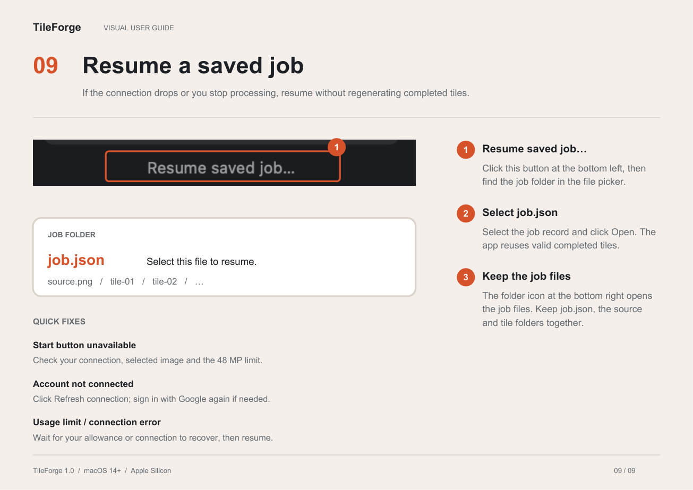

<!doctype html><html lang="en"><meta charset="utf-8"><meta name="viewport" content="width=device-width,initial-scale=1"><title>TileForge - Visual User Guide</title><style>body{margin:0;background:#292b2d;color:#eee;font:16px system-ui}header{padding:22px;position:sticky;top:0;background:#1c2024}header a{color:#ffab7b;margin-right:12px}main{max-width:1200px;margin:22px auto}img{display:block;width:100%;height:auto;margin:18px 0;border-radius:8px}section{scroll-margin-top:90px}p{line-height:1.5}</style><header><b>TileForge · Step-by-step guide</b><p><a href="#s1">1</a><a href="#s2">2</a><a href="#s3">3</a><a href="#s4">4</a><a href="#s5">5</a><a href="#s6">6</a><a href="#s7">7</a><a href="#s8">8</a><a href="#s9">9</a></p></header><main><section id="s1"></section><section id="s2"></section><section id="s3"></section><section id="s4"></section><section id="s5"></section><section id="s6"></section><section id="s7"></section><section id="s8"></section><section id="s9"></section></main></html>